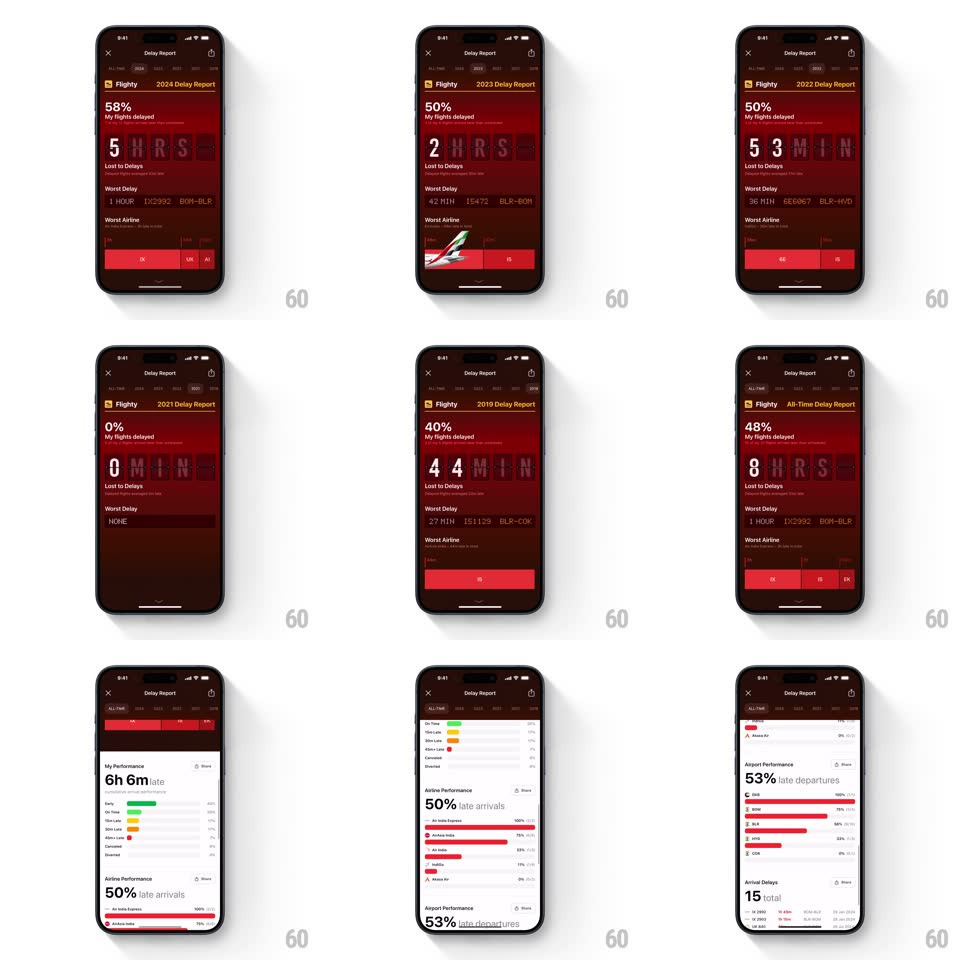

Media
Frame-by-frame

Rebuild this interaction 1:1: Flighty's Delay Report - a dark red shame-board where tapping year tabs re-flips a giant split-flap counter of hours lost to delays, with worst-delay/worst-airline rows and red bar rankings, scrolling into white performance cards.

Rebuild this interaction 1:1: Flighty's Delay Report - a dark red shame-board where tapping year tabs re-flips a giant split-flap counter of hours lost to delays, with worst-delay/worst-airline rows and red bar rankings, scrolling into white performance cards.
## Integration
Integration: stack-agnostic spec - springs given as stiffness/damping, timed motions as duration + curve; map every value to your framework and animation library of choice.
## Scene
Dark maroon page: "Delay Report" header with close/share, a year tab row (ALL TIME, 2024, 2023...), a huge red "48%" with "My flights delayed", then a massive split-flap display ("8 HRS" - glowing red flip digits with the flap's center seam) under "Lost to Delays", then "Worst Delay" and "Worst Airline" rows and a red horizontal bar chart. Scrolling reveals white cards: "My Performance 6h 6m late", "Airline Performance 50% late arrivals" bars, "Airport Performance", "Arrival Delays 15 total".
## Motion spec
Pattern: split-flap counter + tab-driven stat swap.
- Tab tap: the tab pill slides (spring ~380/22); the hero % and flap digits re-flip character by character (each flap folds 90deg over 140ms, 60ms stagger left to right - the classic mechanical cascade) as the value changes.
- Worst-delay rows crossfade with a 6px rise (250ms); the bar chart redraws from zero width (400ms ease-out, 60ms stagger per bar).
- Scroll: the red hero pins and dims (opacity 1 -> 0.5, tracking scroll) as white cards slide over it; each card springs in on first reveal (fade + 20px, spring ~340/20).
- The flap digits idle with an occasional ambient micro-flip (a random character does a single fold every ~4s) - the board feels alive, like a real departure board.
## Calibration
- The split-flap must show its seam and fold shading - flat digit swaps would kill the mechanical illusion.
- Red on maroon keeps contrast soft - the board glows, it never glares.
## Reduced motion
Tabs crossfade values; flap digits change without folding; bars appear at final width.
## Don't miss
- The flap cascade on tab change is the star - hours lost flipping in like an old airport board.
- The idle micro-flip - a tiny detail that sells "real hardware".